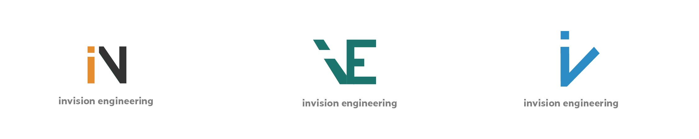
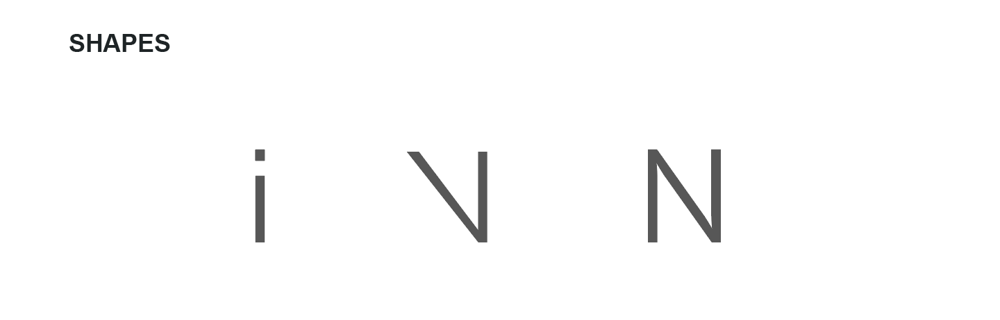
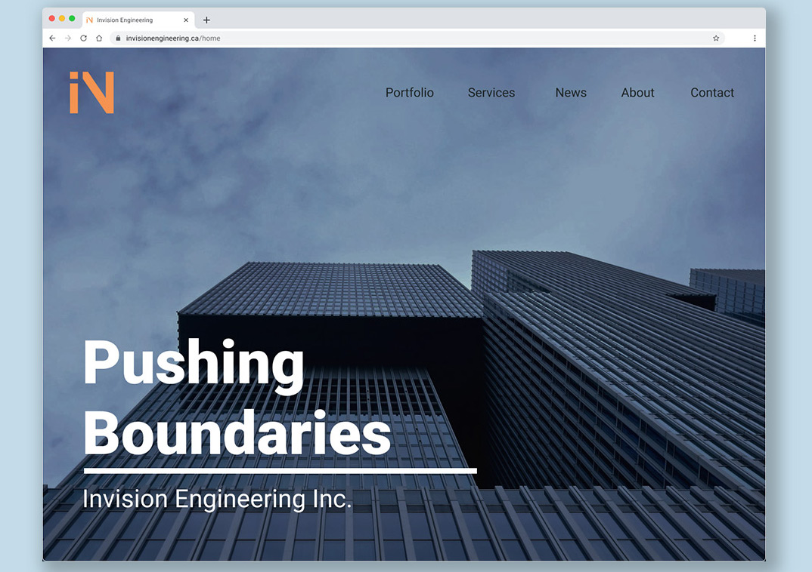
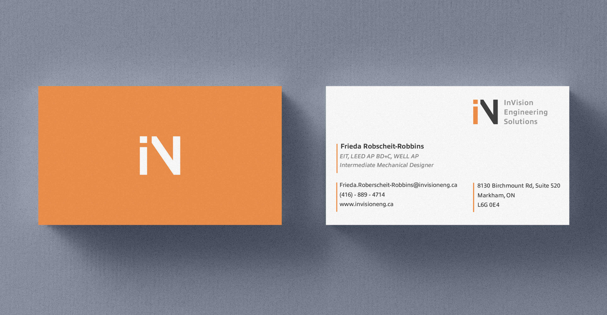
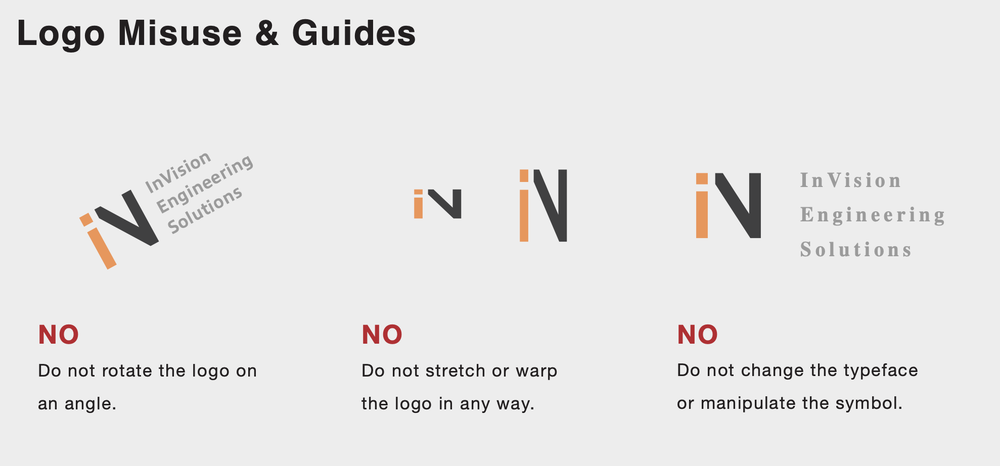
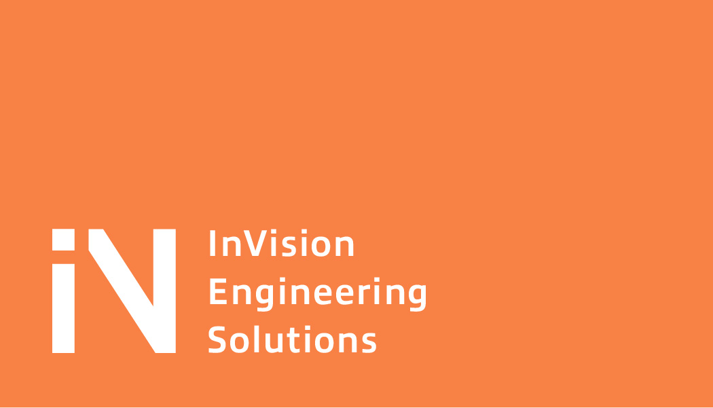

1 Month
Client Work
Graphic Design
For this project my task was to create a logo and business card for my client who specializes in engineering the HVAC systems in commercial buildings and manufacturing facilities. He was looking for a mark in a simple but cohesive package that can represent his new startup engineering firm for the long term.
I looked at what my client’s industry standards are and what are some of his competitors have for logos and business cards to see if there are familiarities that speak to his target audience. I also interviewed him what are some of the traits he would like to portray for his company and where his logo will be most visible in his line of work.
For the business card, I started by asking what was the feeling they wanted to give off when a person receives it. We focused on the word “boutique” to guide the design. This lead my research for both the layout and recommended materials to print on.
I started sketching multiple variations of logos and I narrowed it down to the top 3 to show my client. To help him see them in a practical sense, I created mock-ups of where the logo will be seen. From there I refined the one that fit their liking. For the logo we went with the square shape as it represents strength and safety which is important for the engineering profession. Then to add a unique touch is the asymmetrical right angle triangles to represent out of the box, innovative thinking. The logo essentially is the letter i and letter v placed together make the shape “in” for invision.
  Similarly for the business card, I also created multiple rough variations and showed the top 3 designs to the client to see which direction he felt like going towards. Since in the research stage we wanted to focus on what boutique means in every sense, I decided to make a design inspired by high fashion store layouts with the use of negative space. This had to be balanced by having all the information required to fit as well.
No major refinement was needed for the logo that my client chose as he liked how the mock ups used the colours and the overall shape was good. All I did was change the colours for better visibility and refined the spacing of the elements. As part of the logo package, a guideline was also created for how to use and place the logo.
The business card on the other hand went through a few iteration before it was complete. There was conflicting opinions on how the order of information and scale of the elements but eventually we found a design that worked.
• Stand up for your design decisions.
• Communicating and interviewing the client for background information is a great research method.
• Provide guidance how the design should be displayed or printed.